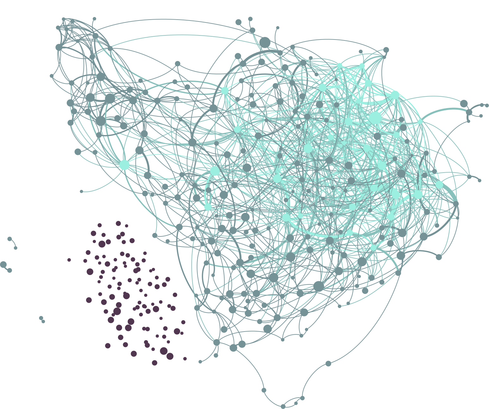
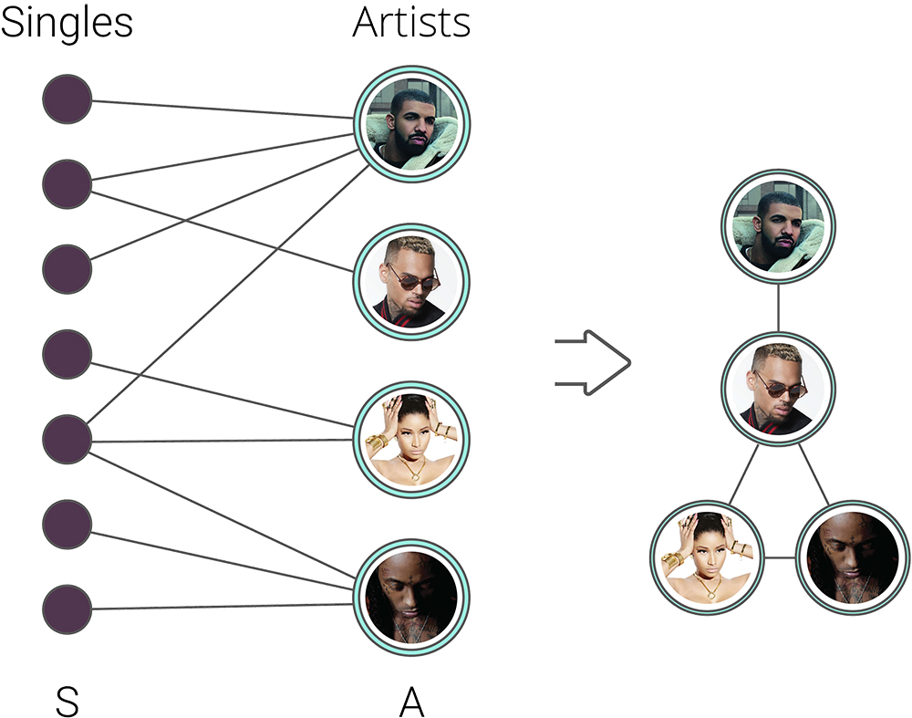

In order to model a "successful" network of collaborations, we collected all the artists on Billboard's Artist 100 chart, a weekly ranking that lists the top 100 artists. In total, we collect 211 rankings between 2014 (July 26, 2014) and 2018 (July 28, 2018). As each chart consists of 100 artists' names, we collected 21,100 artists' names in total, which were deduplicated to achieve 1,135 distinct names.
For more information on each artist, we also collected data from Spotify, one of the most popular and used music streaming platforms. Then, for each artist collected on the Billboard chart, we also collected features and her/his ten most popular songs. In the same way, the artists (and their features) that collaborate in the execution of the top 10 songs were also collected. Therefore, the total number of artists grew to 2,152.

To model the music collaboration network, we collected all the artists who participated in the execution of a single — either as participation (featuring) or collaboration (with). The dataset was modeled as a bipartite graph with nodes for a set of songs and a set of artists, and edges connecting the individuals who collaborated in the execution of each song.
In the bipartite graph, there are two groups of nodes: (S) the set of songs; (A) set of successful artists who collaborated in the execution of the songs present in S. The bipartite model was then designed as a unimodal non-directed graph: every two nodes in A are connected by a link if they are connected to the corresponding node in S (in the bipartite representation). In other words, only artists are present as nodes, and edges exist between artists who worked on the same song in such a projection. In addition, songs that do not have more than one artist in their execution are modeled as self-loops on the artist's node.
Finally, we perform a network filtering for keeping the network into a processable size and getting rid of potential outliers. Therefore, the network includes only artists with a popularity rating greater or equal than 70, and at least 1,000,000 followers. Below, we present some statistics of the originally collected network and the new, filtered one.